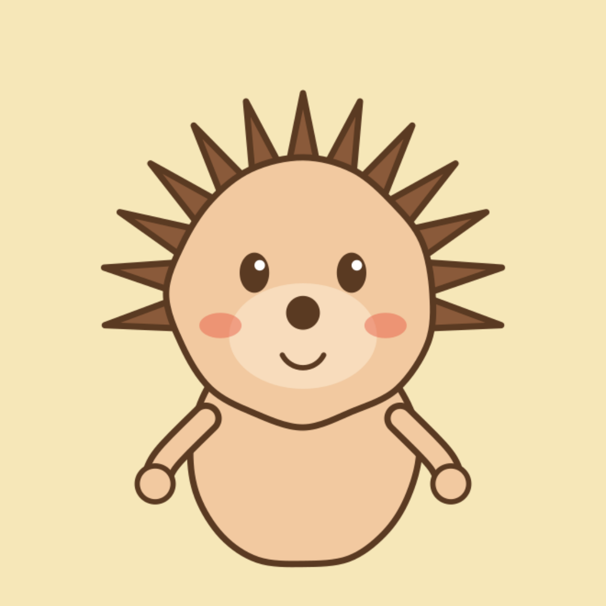

Pip's Little Table
Gentle mealtime cartoons for babies and toddlers, ages 1 to 4.
Pip is a little one learning to eat. At Pip's little table, we try new foods together, one tiny taste at a time. Our videos are calm and slow, with soft colors and quiet sounds, and are made for little ones to watch with a grown-up.
Watch
About this site
This site also describes Pips Yayin, a private tool we use to read statistics about our own YouTube channel. It is not offered to anyone else.
Contact: the email address on the About page of our YouTube channel